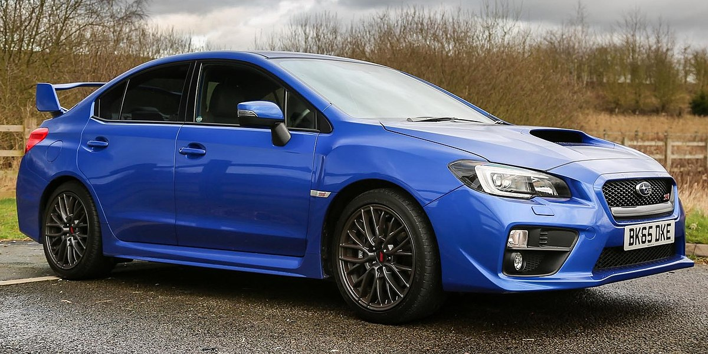

History of the WRX
The Subaru WRX is an all-wheel drive sport compact car manufactured by the Japanese automaker Subaru, originally based on the Impreza created for the World Rally Championship in 1992.
Subaru claimed the name WRX stands for "World Rally eXperimental". Starting with the 2015 models, the WRX lineup has been split from the Impreza, with a different body style that is not offered as an optional hatchback/wagon, being introduced as the separate Levorg model.
WRX Models
- Mean Eyr
- Bug Eye
- Blob Eye
- Hawk Eye
- Stink Eye
- Evo Eye
Why buy a WRX
Toss the WRX into a corner and you're greeted with a lively companion eager to eat up any twist or turn you throw at it. From tight, damp roads in the Redwoods to the fast canyons of Angeles Crest Highway, the driving experience will be the same: predictable, composed handling that lets you carry speed and confidence into a corner. Although spirited driving at times can feel slightly one-dimensional with the Subaru's fixed 50/50 power split the manual transmission is what sells it.
WRX Selling Points
- Manual Transmission
- Agressive Looks
- Super Fast
- Very Loud
- Four Door Sedan for the Family